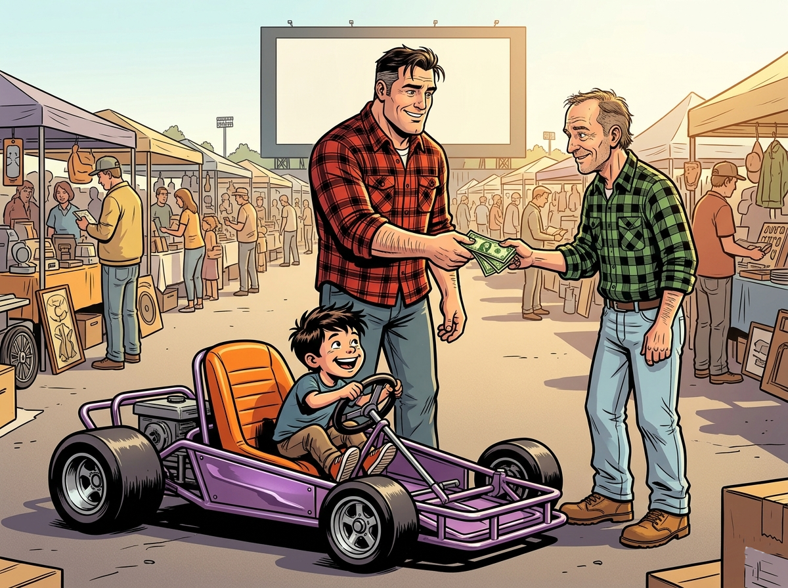

Hidden Scene · The Orange Robot
Frank woke before the sun. The bedroom was dark and still, the only sound Rachel's slow, steady breathing beside him. He lay there a moment, listening to the house. Then he eased out of bed, put on his slippers, and padded down to the kitchen.
He made a pot of coffee, poured himself a cup, and settled into his chair in front of the television. The early news was on — traffic, weather, the usual. Then a reporter appeared on screen standing in a vast, sunlit lot, microphones in hand, booths and folding tables stretching out behind her as far as the camera could see.
"We're live at the Holiday Drive-In, where the Sunday swap meet is already drawing early crowds. Hundreds of vendors, thousands of items — if you're looking for a deal, folks, the early bird really does get the worm."
Frank smiled into his mug. He set it down, got up, and headed down the hall.
He cracked open the door to the older boys' room first. Mike was sprawled on his back, one arm hanging off the mattress. Curtis had his face buried in the pillow. Dale and Kevin were tangled in their blankets, dead to the world. Frank pulled the door shut without a sound and moved on.
When he passed Joey's room, a thin line of light showed under the door.
He pushed it open. Six-year-old Joey sat cross-legged on the floor in his pajamas, turning something over in his hands — a dismantled toy, its parts spread all around him. He looked up when Frank appeared in the doorway, completely unsurprised, as if being awake at five-thirty in the morning was the most natural thing in the world.
"What are you doing?" Frank asked.
"Just playing around," Joey said.
Frank leaned against the doorframe. "You want to come somewhere with me?"
"Where?"
"Come on. Get dressed. I'll show you."
✦
Frank was buttoning his collar when Rachel stirred. She turned over, squinting at him in the dim light.
"Where are you going?"
"Swap meet. Over at the old drive-in. I want to get there early."
She propped herself up on one elbow. "This early? What are you looking for?"
"I'll know when I see it." He smiled at his beautiful wife — she looked like an angel, he thought to himself. "Early bird gets the worm. I'm taking Joey."
As if on cue, Joey appeared in the doorway, his shirt half-tucked, hair sticking up on one side.
Rachel looked at him and her face softened into a smile. She held out her arms.
"Come here, JJ. Give me a hug before you go."
Joey crossed the room in three quick steps and threw his arms around her. She held him tight, kissed the top of his head, then leaned back and looked at him with a mother's careful eye. She reached up and ran her fingers through his hair, smoothing it down gently.
"Put a little water on that before you walk out the door, sweetheart."
"Okay, Mom."
She pulled him close one more time, kissed his cheek. "Have fun with your dad."
✦
They smelled it before they saw it — the faint mingling of dust and motor oil and old fabric drifting across the morning air as Frank turned the truck into the drive-in lot. Then the full picture opened up before them, and Joey pressed his face to the passenger window.
It was enormous.
Hundreds of folding tables and pop-up tents covered every inch of the old lot, arranged in long rows that stretched from the crumbling projection booth all the way to the back fence. It looked like an entire neighborhood had emptied its attics and garages overnight and hauled everything here. Old clothes hung from wire racks — dresses and work shirts and winter coats, some of them pressed and neat, others bunched on hangers without ceremony. Towers of vinyl records lined one booth, organized loosely by decade, their faded cardboard sleeves worn soft at the corners. Another table was piled high with kitchen things — cast iron pans blackened with decades of use, ceramic mixing bowls, hand tools, old telephones, knickknacks, things whose purposes had been half-forgotten. Everywhere Frank looked there were tools: wrenches and hand saws and levels and drill bits loose in coffee cans, power tools from the seventies with cords coiled around them, wooden toolboxes with brass latches.
People moved slowly up and down the rows, paper cups of coffee in hand, picking things up and setting them down, chatting with the vendors who sat in folding chairs beneath their tents with the unhurried ease of people who had nowhere else to be.
Frank found a spot to park and they climbed out.
"Stay close," he said.
Joey didn't answer. He was already looking.
They hadn't made it twenty feet before Joey stopped.
A folding table near the entrance was covered in old toys — tin cars and wooden puzzles and rubber animals and board games with warped boxes. Joey's eye went straight to a small tin automobile, fire-engine red, its paint worn to silver at the edges. He picked it up carefully, turned it over, and found the key — a flat metal tab protruding from its side. He wound it slowly, feeling the resistance build with each turn. When he set it on the table and let it go, the little car buzzed forward in a straight line, its rear wheels spinning furiously, until it reached the edge and Frank caught it just before it went over.
Joey laughed.
"How does it do that?" he asked.
Frank wound it again, more slowly this time, and held it up so Joey could see the underside.
"There's a spring inside," he said. "When you wind it, you're tightening the spring — storing up energy. When you let it go, the spring unwinds, turns the gears, and the gears turn the wheels."
"So the spring is the motor?"
"In a way. This was made back before batteries were everywhere. If you wanted a toy to move, you had to put something inside it that could store work. A spring can do that. You put in a little effort —" he wound it again, "— and it gives it back." He set it down and let it run.
Joey watched it go.
"So it doesn't work unless you wind it," he said.
"That's right. You want the reward, you put in the work first. That's not just how this toy works, son. That's how most things worth having work." Frank picked it up and handed it back to Joey. "No shortcuts."
Joey turned it over in his hands one more time, then set it gently back on the table. He looked up at the vendor — a heavyset man in a canvas hat who had been watching them with a quiet smile — and said, "It's a good one."
The man nodded. "Over forty years old and still runs better than half the things they make today."
✦
They moved deeper into the rows. Frank watched his son the way you watch something rare — a bird that might startle and fly off if you moved too fast. Joey paused at anything with moving parts. He picked up a hand-cranked pencil sharpener and turned the handle. He examined the gears of an old eggbeater, tracing them with his finger. He spent three full minutes at a booth selling vintage bicycles, crouching to inspect the chain drive on a cruiser from the early sixties, asking the man behind the table how the derailleur worked.
Then they came to a booth stacked deep with old kitchen and farm equipment — a chaotic arrangement of rusted and worn metal things, most of it unrecognizable at a glance. Joey moved through it slowly, picking things up, setting them down. Then he found the meat grinder.
It was cast iron, probably from the late twenties or early thirties — heavy and solid, with a green-painted wooden handle on the crank and bare iron everywhere else. Someone had made it to last and someone had kept it long enough to prove it. Joey cranked the handle. It turned smoothly.
"What is this, Dad?"
"Meat grinder," Frank said. "You clamp it to the counter, feed in a piece of meat — steak, pork, whatever you have — turn the handle, and ground beef comes out through the holes on the end."
Joey cranked it again, faster this time, watching the shaft turn. "Can we get it? We could make our own hamburgers."
"Hamburgers are cheap, son. We don't need a machine for it."
Joey set it down reluctantly, giving the handle one last turn before he let it go.
✦
Two booths down, Joey stopped walking.
In the middle of a cluttered display of old yard equipment and hand tools, sitting low to the ground on four small wheels, was a go-kart. It was painted metallic purple — not a careful, professional purple but the kind that came from a rattle can, applied with enthusiasm if not precision. The paint was chipped and faded in places, but the frame was solid, the tires still held air, and the steering column was straight. The only thing missing was an engine. Where a motor should have been mounted, there was just an empty platform with four bolt holes.
Joey was already moving toward it.
The man sitting behind the booth — older, maybe sixty, in a flannel shirt despite the warmth of the morning — looked up from his newspaper.
"Go ahead," he said. "Sit in it."
Joey didn't need to be told twice. He climbed in, gripped the steering wheel with both hands, and began moving it back and forth, his feet finding the pedals, his face arranged in an expression of pure concentration, as if the machine might actually go if he wanted it badly enough.
Frank stood back and watched him, arms crossed, a slow grin spreading across his face.
"How much?" he asked.
The man folded his newspaper. "Wanted a hundred. But seeing how your boy took to it — sixty." He shrugged. "Engine blew out years ago. I had it all apart in the garage and lost half the parts somewhere. You'd need to find your own motor. But the frame's solid. Brakes still work. Built well."
Frank walked around it slowly, crouching to check the frame welds, looking at the steering linkage, running his thumb along the bolt holes on the empty engine platform.
"What did it have originally?"
"Originally it had a Briggs 3½ HP but when I got older I shoved a McCulloch MC-101, 12 horses. Man! She was a screamer. Until the engine seized. Too much nitro. Scared the shite out of me. She was so fast, made my knees knock. Dangerous as hell." The man grinned, shaking his head slowly at Joey. "I'd stick with a Briggs for this little guy. Three and a half horses, max."
Joey looked up from the wheel. "Can we find an engine for it, Dad? Can we find a motor?"
Frank straightened up. He looked at Joey — at that face — and then back at the empty platform.
"Let me think about it," he said. "Keep looking around. We might come back."
✦
They sifted through rows and rows of vintage gold until they came upon a stall that caught Joey's eye — more machines: an old John Deere compact sitting squat under a canopy, and leaning against the table beside it, a lawn edger that had seen better days.
The table beside it was crowded with garden equipment — rakes and loppers and hoses, a rusted broadcast spreader. The edger's handle was pitted with rust, the wheels cracked, their rubber brittle and splitting at the edges. By any reasonable measure it was junk. A strip of masking tape on the shaft read: $5.
Joey crouched in front of it.
"What is this, Dad?"
"Lawn edger. The engine drives this blade here — spins it very fast. You walk behind it along the sidewalk and it cuts the edge of the grass where the mower can't reach. Keeps things looking sharp."
"Do we need one?"
"We already have one."
"What about a spare?"
Frank almost laughed. "No, son. Not really."
But Joey wasn't looking at the wheels or the handle. He was looking at the engine. It was a vertical shaft unit — compact, mounted low on the platform, four bolt holes visible at the corners of the mounting bracket.
"Dad," Joey said slowly, sounding out the label on the motor. "This sticker says Briggs and Stratton. Is that what the go-kart needs?"
Frank blinked. He crouched down beside his son.
It was. A Briggs and Stratton, three and a half horsepower, vertical shaft. He looked at the bolt spacing. He looked at the mounting plate. He thought about the empty platform on a purple go-kart three rows back.
"Joey," he said, "I think you might be onto something."
They went back to the go-kart. Frank crouched and measured the bolt pattern with his hand, then went back to the edger and did the same. The spacing matched.
"Same pattern," Frank said quietly.
"So it'll fit?" Joey asked.
"I think it might."
Joey stood there in the middle of the swap meet aisle, surrounded by strangers and old things, breathing in that early morning smell of dew on asphalt, dust and gasoline. He looked up at his father with an expression that Frank would carry with him for years.
Frank went back to the man with the go-kart.
"We'll take it," he said. He pulled out his roll of cash and laid three twenties on the table. "Hold it for me. I'll bring the truck around."
Then he went back to the edger, crouched down, and grabbed the pull rope. He gave it a firm yank. The engine turned over — smooth resistance, strong compression. He yanked it again. It wanted to run.
"This thing is still good, Joey."
"Really?"
"Really." He straightened up and fished five dollars from his pocket. "We'll take this."
He paid the man, then looked at Joey.
"I want you to know something," Frank said. "I'm not just buying you a go-kart. I'm counting on you to help me put this thing together. You and me, in the garage, figuring it out. You understand?"
Joey nodded seriously. "Yeah, Dad."
"Good." Frank grabbed the handlebars of the edger and started rolling it toward the purple go-kart. "Because I have a feeling you're going to be better at this than I am."
✦
They loaded both into the truck bed and headed home.
When Frank turned into the driveway and killed the engine, Mike and Curtis were already waiting for them on the porch, arms crossed. Mike came down the porch steps first.
"What's that?"
"A go-kart," Joey said, already climbing out of the cab. "It's mine. Me and Dad are gonna fix it up. We found an engine for it and everything."
Curtis looked at Frank. "You bought him a go-kart?"
"We found it at the swap meet," Frank said simply. He dropped the tailgate and began working the go-kart toward the edge of the bed.
"You never bought us a go-kart!" Mike said. His voice was flat, careful, the way a voice gets when it is working to sound like it doesn't care.
Frank paused and looked at his oldest son. "You were never up at five-thirty on a Sunday morning either."
He let that sit. Then he and Joey eased the go-kart down from the truck and rolled it toward the garage.
Mike stood on the driveway and watched them go. Curtis stood beside him. Neither of them said anything else.
But Frank felt it as he walked away — something settling in behind him, quiet and cold. He told himself it was nothing. Boys would be boys. They would get over it.
He told himself that for a long time.
✦ ✦ ✦